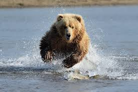

Welcome!
Animals exhibit a broad diversity of behaviors to meet their needs for survival, growth, and reproduction. Each behavior has consequences to the individual and has distinct relationships with the external environment. Changes in behavior and their associated movement patterns may represent the earliest measurable response to variation in habitat suitability and potential effects of environmental change.